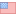

<div
  [ngClass]="'currentTheme' | translate"
  [dir]="!getLangDirection() ? 'rtl' : 'ltr'"
>
  <ion-menu
    side="start"
    menuId="custom"
    contentId="main"
    class="my-custom-menu"
  >
    <ion-toolbar color="primary"> </ion-toolbar>
    <ion-content class="side-nav">
      <ul>
        <li>
          <ion-icon name="person-circle-outline"></ion-icon>
          {{ "profile" | translate }}
        </li>
        <li
          *ngIf="user.roles !== permissions.Operator && permissions.Technician"
          routerLink="/select-project"
          routerLinkActive="active-link"
        >
          <ion-icon name="bag-outline"></ion-icon>
          {{ "projectStatus" | translate }}
        </li>
        <li
          *ngIf="user.roles !== permissions.Operator && permissions.Technician"
          routerLink="/manpower"
          routerLinkActive="active-link"
        >
          <ion-icon name="people-circle-outline"></ion-icon>
          {{ "manpower" | translate }}
        </li>
        <li (click)="logout()">
          <ion-icon name="log-in-outline"></ion-icon>
          {{ "logout" | translate }}
        </li>
        <hr />
        <li (click)="changeCurrentLang('ar-EG')">
           AR
        </li>
        <li (click)="changeCurrentLang('en-US')">
           EN
        </li>
      </ul>
    </ion-content>
  </ion-menu>

  <ion-app>
    <ion-router-outlet id="main"></ion-router-outlet>
  </ion-app>
</div>
